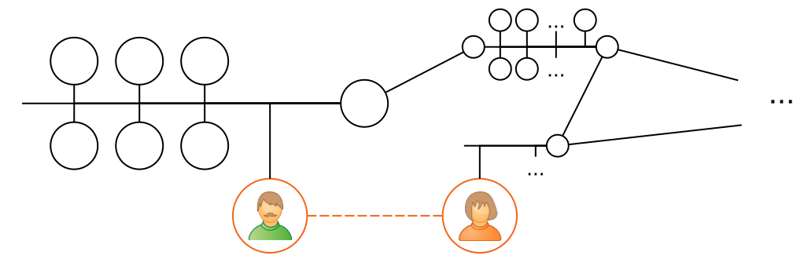
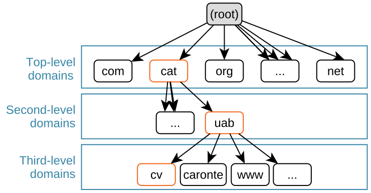
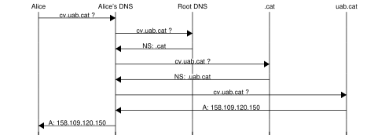

[10] Layer 7: Application¶


The top layer of the TCP/IP network stack includes all applications that use TCP or UDP for transport. It is by far the one that contains the largest number of protocols, and where those protocols are more quickly created and replaced.
In addition to user apps, there are several auxiliary systems and protocols that help with configuration and operation of all hosts in the Internet. Some of the most critical are addressed in this chapter.
[10.1] DNS – Domain Name System¶
The DNS protocol is responsible for translating domain names such as ietf.org or
cv.uab.cat into IP addresses that can placed inside datagrams.
DNS services are run on both TCP and UDP, i.e., both transport protocols can be enabled. In both cases, port 53 is used.
[10.1.1] Hierarchy¶

Internet domain names are sequences of names separated by dots. These names are presented from the specific to the general in a hierarchical fashion. For instance, in cv.uab.cat, cv belongs to uab.cat, and uab to cat. The rightmost name, e.g., cat or com must be one of IANA’s top-level domains.
DNS servers are organized in the same hierarchical way as those domain names. There are \(13\) root DNS servers (Root-A to Root-M), which are responsible for all top-level domains. You can ask any of them about com, but also about su, and they will know about them.
That does not mean that any root server knows about every domain under their top-level domain (e.g., uab.cat): they just know about those top-level domains. (e.g., cat). The job of the root DNS servers is to redirect you to another DNS server in charge of the top-level domain you requested.
Similarly, the DNS servers responsible for cat will know about any existing *.cat domain (e.g., uab.cat), but not about subdomains (e.g., cv.uab.cat). The job of those top-level domain DNS servers is to redirect you to other DNS servers authoritative for the second-level domain requested (e.g., uab.cat). Second-level domains can then structure their name zone as desired, including any subdomain number and depth, as well as the name to IP translation within the zone of authority.
Exercise 10.1
Everyone uses DNS all the time. What would be the risks of having a centralized name translation system instead of DNS’s distributed nature.
[10.1.2] Records¶
DNS can be seen as a distributed database with different types of entries called DNS records. The main ones are:
-
A: An A record maps a domain name to an IPv4 address.
-
AAAA: An AAAA record maps a domain name to an IPv6 address.
-
NS: An NS record points to a DNS server that can help.
-
MX: A MX record provides the domain name of the email server that handles messages for a domain.
-
CNAME: A CNAME record maps a domain name to another domain name.
Applications make requests to DNS servers indicating the type of records they are interested in. Server replies may be for the requested A or MX records, but the client may also receive a redirection to another DNS (NS) or an alias to another domain name (CNAME).
[10.1.3] Resolution¶
The distributed and hierarchical nature if the DNS database makes it sometimes necessary to exchange multiple messages to satisfy a DNS query.
For instance, Alice may perform a fully iterative resolution all on her own. The first two replies contain an NS record pointing to the next DNS server and the IP address of that DNS server, but not the IP address of the requested cv.uab.cat.
Alice’s internet provider (ISP) or employer will likely offer DNS servers whose job is to receive Alice’s requests and resolve them for her in a recursive manner.

The combination of recursive resolution and cache tables makes DNS a pretty efficient system with extremely high availability and low latency.
Exercise 10.2
You can use the host and dig tools to make DNS queries and see the results. For instance, my output to dig uab.cat -t ns contains the following lines:
;; QUESTION SECTION:
;uab.cat. IN NS
;; ANSWER SECTION:
uab.cat. 172800 IN NS dns.uab.es.
;; ADDITIONAL SECTION:
dns.uab.es. 172112 IN A 158.109.0.1
-
What type of record did I request?
-
What two record types did I receive?
-
Why did I receive two record types?
-
Perform a manual iterative resolution of
cv.uab.cat. You may start with something likedig @202.12.27.33 cv.uab.catto query the M root server.
[10.2] DHCP – Dynamic Host Configuration Protocol¶
In order to fully participate in the Internet, a host needs to have the following aspects correctly configured:
-
IP address: The IP address is needed to identify a node in the network, and for that node to know what messages are directed to it.
-
Netmask: Nodes need to know this to determine when to deliver datagrams directly, and when indirectly.
-
Gateway IP: The IP address of at least one router is needed to deliver messages indirectly with destination outside the current LAN.
-
DNS server’s IP address: Although not strictly required to use TCP/IP, the address of a DNS server is extremely useful, and required to resolve domain names into IP addresses.
Traditionally, these parameters had to be manually configured in each computer. Nowadays, most user’s computers are automatically configured with DHCP. Modern OSs contain a DHCP client that periodically queries the LAN until configured.
Note
Network hardware comes with a pre-configured, default MAC address. Furthermore, a node needs to know its MAC address to operate the DHCP protocol. Therefore, MAC addresses are not configured via DHCP.
DHCP works on UDP. DHCP servers listen on port 67, and clients listen on port 68. The ideal DHCP exchange comprises \(4\) messages: Discovery, Offer, Request, Acknowledgement.
-
Discovery
The goal of this message is to find DHCP servers willing to provide a configuration.
In the first communication, the client doesn’t know the DHCP server’s IP. Instead, it uses:-
Its MAC address as the source MAC address.
-
The LAN’s broadcast (
ff:ff:ff:ff:ff:ff) as the destination MAC address. -
0.0.0.0as the source IP, meaning “unknown”. -
The local broadcast address ,
255.255.255.255, as the destination IP.
-
-
Offer
Zero or more servers will reply to the client with configuration offers. These configurations (e.g., IP addresses) are not property of the client until the server sends a DHCP Acknowledgement.
The server keeps track of a pool of addresses that dynamically assigns to clients. IP addresses are offered for a fixed period of time, after which they expire unless they are renewed (see below). Addresses that are not renewed are put back in the pool and offered back to clients as they make requests.-
The server can use its real IP address and the one offered to the client.
-
The client knows it’s the recipient because the server pays attention to the client’s Discovery source MAC address.
-
-
Request
The client picks one of the received offers and requests that the assignment is completed.-
The client uses the local broadcast address,
255.255.255.255, as the destination. -
The client maintains
0.0.0.0as the source because the offered address is still not the client’s.
-
-
Acknowledgement (ACK)
The server confirms the request. Once the client receives this ACK, it starts using the offered configuration as its own. This ACK should not be confused with TCP’s. -
Negative Acknowledgement (NACK)
It is also possible that the server denies the request, e.g., if too much time has passed since the offer. In this case, a negative Acknowledgement (NACK) is sent instead. If a NACK is received, the client needs to go back to the Discover phase.
When a DHCP server leases an address to a client, it does so for a limited period of time \(T\). This period is set by the DHCP server, and can be configured. After \(T/2\) is elapsed, clients may try to renew the leased configuration. To do so, the Request-Acknowledgement cycle is repeated over time until either end fails to complete it in time, or the DHCP server sends a NACK.

Exercise 10.3
The typical domestic router implements both a DHCP client and a DHCP server. Explain how this is possible and why it is useful.
[10.3] Autonomous Systems¶
Routing is performed one hop at a time, using routing tables as discussed in Section 8.3. Those tables need to be coordinated at a large scale to guarantee graph connectivity to all hosts in the Internet.

[10.3.1] Organization¶
To facilitate this coordination, LANs are grouped in autonomous systems (AS). These manage non-overlapping blocks of IP addresses (w.x.y.z/N) that are separately owned and managed. Many companies, universities and ISPs have their own ASs that are publicly listed. For instance, UAB’s network belongs to AS13041.
Internet Exchange Points (IXP) are a special kind of AS whose purpose is to interconnect other ASs, instead of hosting services and/or clients. Of course, running these IXPs is not free, so commercial relations are established with those interconnected ASs. Some IXPs are committed to providing service to anyone meeting their basic requirements, are not controlled by any single operator, and offer transparent and often equitable pricing to their clients. This type of IXP is called Neutral Point (NP), as opposed to nonneutral points used, e.g., only by a single network operator.
All ASs operate border routers (BR) to interconnect ASs. When a border router receives a datagram with destination inside the AS, it forwards the datagram through the AS’ internal routers (IR). Similarly, when a host inside an AS needs to contact a host in another AS, datagrams are forwarded through border routers until they reach the destination AS and ultimately the destination LAN.
[10.3.2] Routing table configuration¶
Manually configuring the routing tables of all border routers and internal routers would be too costly and prone to errors. Instead, different algorithms are employed to configure them automatically.
-
Within the AS, internal routers and border routers use one of the available interior gateway protocols. Often, RIP (Routing Information Protocol) is used due to its relatively simple configuration. That said, ASs may freely choose the algorithm they use internally to their AS.
RIP implements a variation of the Bellman-Ford shortest path algorithm to minimize the number of hops datagrams need to travel within the AS. Periodically (e.g., every \(30\) s), each IR and BR:-
Advertises its perceived distance to other routers in the AS.
-
Updates its perceived distances based on other router’s advertisements.
-
Updates its routing table to all LANs in the AS accordingly.
Exercise 10.4
RIP uses the number of hops as its cost metric. How could this be problematic? How can this problem be solved?
-
-
Between ASs, only border routers need be configured; interior routers simply need to direct exterior traffic through the border routers.
Border routers run an exterior gateway protocol in addition to the interior gateway protocol used within the AS. Different ASs must agree on the algorithm they use, so BGP (border gateway protocol) is normally used.
BGP is a more complex protocol than RIP. This complexity is needed because BGP coordinates border routers belonging to different ASs, i.e., with different owners:-
RIP uses a single number (the distance, i.e., the number of hops) to guide a shortest-path graph algorithm. BGP uses paths instead of distances. This allows BGP to choose routes with more hops, but more desirable to the AS, e.g., in terms of time, monetary cost, internal load, etc.
-
BGP was designed with the notion of security and trust in mind, and includes mechanisms to verify the authenticity of the paths announced by a border route.
-
Note
BGP can also be used as the AS’ interior gateway protocol. This is typically done only by very large ASs.
Exercise 10.5
How can BGP translate economic interest into routing configurations?